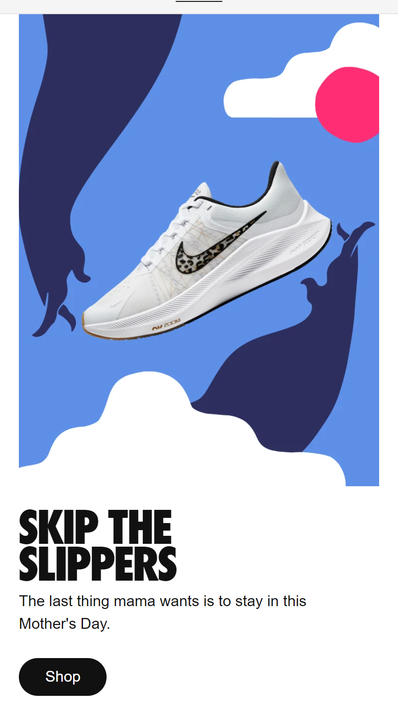
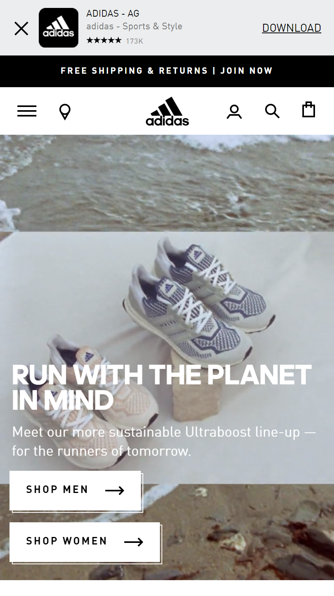

Visual Hierarchy
Visual Hierarchy is clearly demonstrated here in the image taking most of the attention. Then we see the big letters in bold "Skip the Slippers" as grabbing the attention next becuase of their boldness. As we move down the page we see more of a description in smaller letters say "The last thing mama wants is to stay in this Mother's day". The visual hierarchy here is highlighted in the size and boldness of the letter plus the sixe of the image. Nike Website Link
Alignment
Alignment in this adidas website is clearly hightlighted in this invisible line that runs down the left hand side of the page. It seems that all the items and words are left aligned giving the title of "Run with the planet in mind" being aligned with the subtitle and the buttons that signal for "Shop men" and the one that says "Shop Women." Adidas Website Link
Contrast
This is a simple example of contrast. Starting from the header which is a darker greenish color, contrast and the border in the search bar gives it a pleasant look. It mainly uses two colors with a third one shows up here and there. Barnes&Noble Website Link